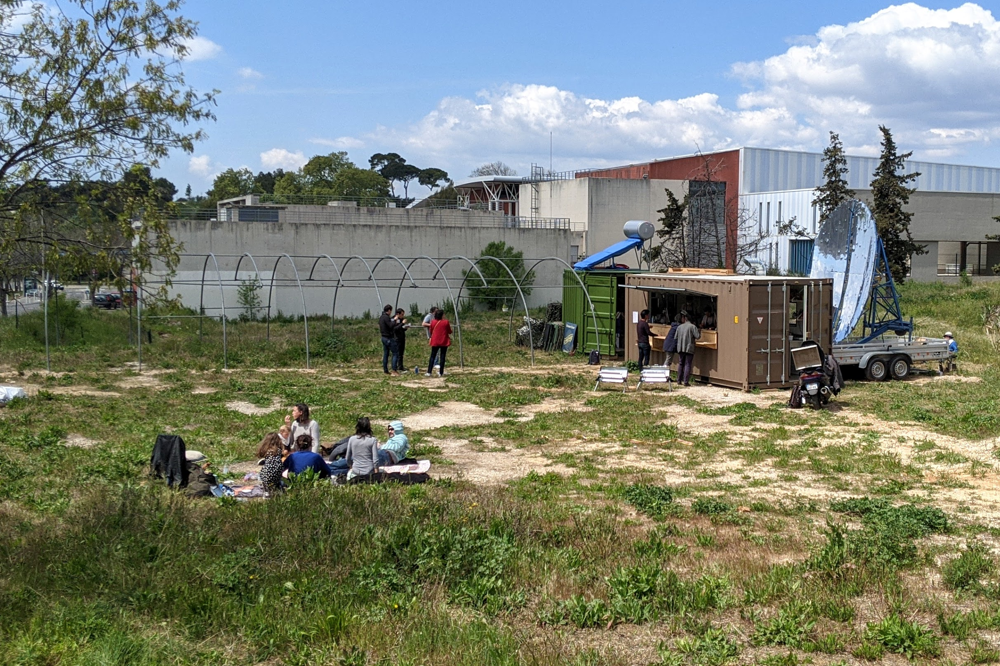

Le restaurant solaire Le Présage s’installe à Château-Gombert
Par groupe 10 le 11 février 2022
Le restaurant solaire Le Présage s’ancre définitivement sur son terrain au technopôle de Château-Gombert, dans sa version guinguette. Il propose une cuisine écoresponsable à emporter, tous les midis, en attendant que le restaurant « en dur » sorte de terre en 2022. Ça y est ! Après des années de travail, de tractations et d’itinérance, le projet de restaurant solaire Le Présage pose enfin ses valises à sa destination définitive : un terrain au cœur du technopole de Château-Gombert (13013), à Marseille. « Nous ouvrirons dès lundi 26 avril, tous les midis de la semaine, en proposant des plats à emporter », mesures sanitaires obligent, nous explique le fondateur Pierre-André Aubert en prenant les commandes. Ce jeudi, pour la “pré-ouverture” de rodage, les curieux ont tout de même pu trouver de quoi manger au soleil tout en respectant les distanciations sociales sur les 2 700 m² de verdure du terrain. , Le restaurant solaire Le Présage s’installe à Château-Gombert, Made in Marseille Lorsque les mesures gouvernementales le permettront, une grande terrasse sera proposée pour déguster sous la serre ombragée Pour ce service d’essai, et afin de donner le ton des menus à venir, la carte proposait maquereaux, bonites, pleurotes ou légumes poêlés accompagnés de riz de Camargue, lentilles vertes, suprême d’agrumes et gremolata. Des produits naturels, de saison et locaux, préparés par les cuisiniers grâce à la chaleur du soleil marseillais. , Le restaurant solaire Le Présage s’installe à Château-Gombert, Made in Marseille Le restaurant construit d’ici 2022 C’est à Aubagne, en 2017, qu’est né la première version de ce restaurant innovant et écoresponsable. Il fonctionne à 100 % à l’énergie solaire. Il s’est développé à Marseille avec la version « Guinguette » créée dans un conteneur reconditionné et transportable. C’est celui-ci qui accueille aujourd’hui les gourmands sur le terrain de Château-Gombert en attendant que la version finale du restaurant, « en dur », sorte de terre. Découvrir le projet : , Le restaurant solaire Le Présage s’installe à Château-Gombert, Made in Marseille Le Présage : le 1er restaurant 100% solaire en France va s’installer à Marseille « Nous tablons sur 2022 pour la fin du chantier », annonce Benjamin Leroy, un des associés. Bâtiment écoresponsable, circuit-court, production de légumes bio sur place, valorisation des déchets… En plus de sa cuisine solaire ambitieuse, le projet se veut écoresponsable de A à Z. En attendant, « la nouvelle écriture gastronomique à l’encre solaire de Marseille » est déjà à dévorer.